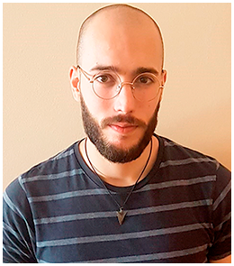

Adrián Font - Lead Designer

Hey everyone,I’m Adrian and I’ve been the lead game designer and gameplay director of The Witcher: Ties of Destiny.
I always loved to play videogames, living among them and experiencing incredible adventures, inspiring me to pursuit the career of being a game developer and create experiences for other to enjoy.It’s been then three years since started developing video games and during this project I’ve put at a test all I have learned about game developing more concretely about design and management fields.
My first task as a lead designer was to establish along the team the pillars and base structure of the game, to do so I managed and distributed the jobs of my designer colleges, including also the planification of design and gameplay meeting which were crucial to define the game. In addition I’ve been ensuring the quality of the design decision thought the projects entire development.
Simultaneously when we were able to start prototyping I began to direct and organize the different scrum groups and their respective tasks, basically establishing the gameplay development pipeline and features to be implemented.
When assigning a certain job to a determined person, I took time analyzing how my team worked, their interactions and how they worked individually. With that in mind I started to take decision on who should work with whom, which task assign to each group, etc. Another management and design function I had was the re-organization and quick reaction when coming across an unexpected problems, this really applies to both field, management and design, specially now with the current global situation which has force us to restructure and rethink certain work methodologies and pipelines. In general terms the ability of being versatile against unforeseen problems, planning and rescheduling, and overall having control on the game status has been what made us achieve milestones.
Finally putting aside my role as lead, I also have been working as level designer, where I have done the conceptualization and blockout of both implemented levels, creating several blueprint and iterating on the blocking until achieving the final result.
PROJECT CONTRIBUTION
My role allowed me to know all implemented systems, so I’ve worked in different areas of the engine, from details to whole systems, being the most ones:
- Leading design: Ensuring the quality on decisions made during the different stages of development, contrasting and questioning with the team members and finally deciding which could be the richest and most optimal decisions.
- Gameplay direction: I’ve worked on managing and organizing the gameplay development pipeline along with the several scrum groups which form them.
- Scrum methodology: Planning and organising using agile methodologies with tools such as hacknplan.
- GDD management: Guidance and organization of the GDDs structure and content where we specify iterations of gameplay and game features.
- Levels concepts & blueprints: Developing the several iterations of the two levels maps, including concepts and blueprints.
- Levels blockouts: Creating the base structure of the level based on the blueprints and concepts, but also modifying and iterating on them.
- Game builds development & assistance: In each milestone I was managing along the other leads and producers the making of the deliverable and assisting in its development.
- Quality Assurance: Iterative testing of the various version of the game filtering bugs and design errors.